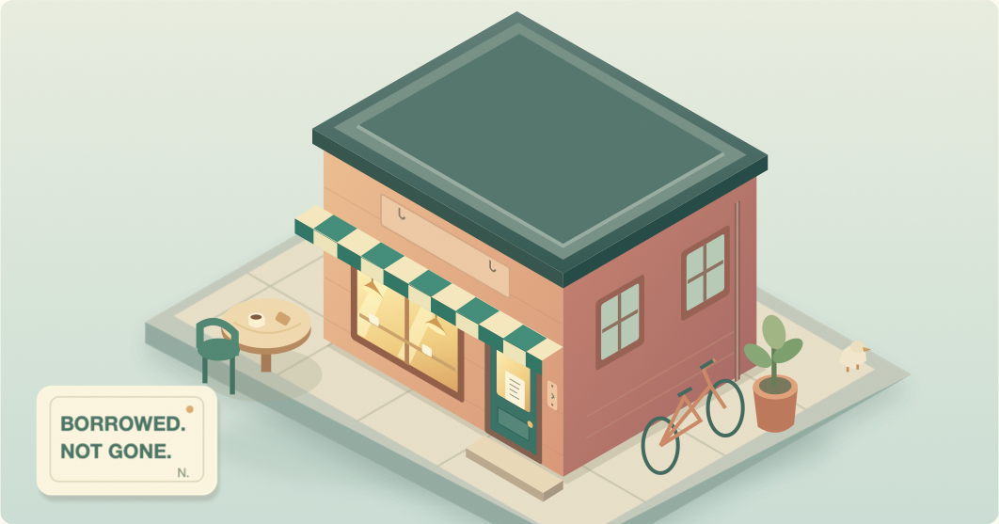

The Bellweather Post
LOCAL NEWS. SMALL TROUBLES. LONG MEMORIES.VOL. LXXI NO. 146
AROUND THE NEIGHBORHOODA RATHER PECULIAR CASE
Forty-six doorbells stolen.
Not a penny missing.
A thief with remarkably poor business sense has been at work on Bellweather Row. Among the missing items: forty-six doorbells, a crooked cafe sign, and the bottom step of a staircase.
Cash tills remain untouched. At one address, the intruder even tightened a loose hinge.
“If it was a burglar, they were tidier than my last employee,” said Ada, owner of the corner cafe at No. 18.
Police have described the case as “technically a priority.”

“They left the till.
They took the welcome.”ADA, CAFE OWNER